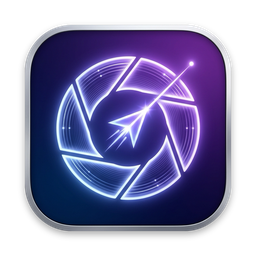

ScrevoScrevo(이하 “앱”)는 이름, 이메일, 기기 식별자, 위치, 사용 통계 등 어떠한 개인정보도 수집·저장·전송하지 않습니다. 앱에는 회원가입, 광고, 분석(애널리틱스), 추적 기능이 없으며 인터넷으로 데이터를 보내지 않습니다.
| 권한 | 용도 |
|---|---|
| 화면 및 시스템 오디오 녹음 | 화면 확대·판서, 화면 캡처, 텍스트 인식(OCR), 화면 녹화 및 컴퓨터 소리 녹음 |
| 마이크 (선택) | 화면 녹화 시 강사 음성 녹음. 설정에서 끌 수 있으며, 녹음 기능을 처음 사용할 때만 요청합니다. |
| 알림 (선택) | 캡처·녹화 완료 안내. 기기 안에서만 표시됩니다. |
| 사용자가 선택한 폴더 | 캡처 이미지, 텍스트 추출(OCR) 결과, 녹화 파일 저장 |
수집하는 정보가 없으므로 제3자에게 제공하거나 위탁하는 정보도 없습니다.
앱은 연령과 관계없이 어떤 개인정보도 수집하지 않습니다.
이 방침이 바뀌면 이 페이지에 변경 내용과 새 시행일을 게시합니다.
변경 내역: 2026년 10월 11일 — 텍스트 추출(OCR) 결과를 파일로 저장하는 기능에 맞춰 3번 항목을 보완했습니다. 수집하는 정보는 없다는 점은 바뀌지 않았습니다.
개발자: Jay
이메일: funpt@me.com
Screvo (“the app”) does not collect, store or transmit any personal information, such as your name, email, device identifiers, location or usage statistics. The app has no accounts, advertising, analytics or tracking, and it does not send data over the internet.
| Permission | Purpose |
|---|---|
| Screen & System Audio Recording | Screen zoom and drawing, screenshots, text recognition (OCR), screen recording and system audio capture |
| Microphone (optional) | Recording your voice during screen recordings. You can turn it off in Settings. It is requested only when you first record with the microphone. |
| Notifications (optional) | Local alerts when a capture or recording finishes |
| Folders you choose | Saving screenshots, text recognition (OCR) results and recordings |
Because no information is collected, nothing is shared with or processed by third parties.
The app collects no personal information from anyone, including children.
If this policy changes, the updated version and its effective date will be posted on this page.
Change history: October 11, 2026 — Section 3 now describes saving text recognition (OCR) results as files. Screvo still collects no information.
Developer: Jay
Email: funpt@me.com